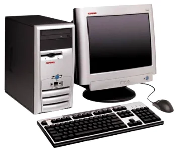

HISTÓRIA E EVOLUÇÃO
HISTÓRIA DO COMPUTADOR
A palavra “computador” vem do verbo “computar” que, por sua vez, significa “calcular”. Sendo assim, podemos pensar que a criação de computadores começa na idade antiga, já que a relação de contar já intrigava os homens. Dessa forma, uma das primeiras máquinas de computar foi o “ábaco”, instrumento mecânico de origem chinesa criado no século V a.C. Assim, ele é considerado o “primeiro computador”, uma espécie de calculadora que realizava operações algébricas.
No século XVII, o matemático escocês John Napier foi um dos responsáveis pela invenção da "régua de cálculo". Trata-se do primeiro instrumento analógico de contagem capaz de efetuar cálculos logaritmos. Essa invenção foi considerada a mãe das calculadoras modernas. Por volta de 1640, o matemático francês Pascal inventou a primeira máquina de calcular automática. Essa máquina foi sendo aperfeiçoada nas décadas seguintes até chegar no conceito que conhecemos hoje. A primeira calculadora de bolso capaz de efetuar os quatro principais cálculos matemáticos, foi criada por Gottfried Wilhelm Leibniz.
A primeira máquina mecânica programável foi introduzida pelo matemático francês Joseph-Marie Jacquard. Tratava-se de um tipo de tear capaz de controlar a confecção dos tecidos através de cartões perfurados.
Já no século XIX, o matemático inglês Charles Babbage criou uma máquina analítica que, a grosso modo, é comparada com o computador atual com memória e programas.Através dessa invenção, alguns estudiosos o consideram o “Pai da Informática”. Assim, as máquinas de computar foram cada vez mais incluindo a variedade de cálculos matemáticos (adição, subtração, divisão, multiplicação, raiz quadrada, logaritmos, etc).
EVOLUÇÃO
PRIMEIRA GERAÇÃO

Os computadores de primeira geração funcionavam por meio de circuitos e válvulas eletrônicas. Possuíam o uso restrito, além de serem imensos e consumirem muita energia. Um exemplo é o ENIAC (Eletronic Numerical Integrator and Computer) que consumia cerca de 200 quilowatts e possuía 19.000 válvulas.
SEGUNDA GERAÇÃO
Ainda com dimensões muito grandes, os computadores da segunda geração funcionavam por meio de transistores, os quais substituíram as válvulas que eram maiores e mais lentas. Nesse período já começam a se espalhar o uso comercial.
TERCEIRA GERAÇÃO

Os computadores da terceira geração funcionavam por circuitos integrados. Esses substituíram os transistores e já apresentavam uma dimensão menor e maior capacidade de processamento. Os computadores da terceira geração funcionavam por circuitos integrados. Esses substituíram os transistores e já apresentavam uma dimensão menor e maior capacidade de processamento.
QUARTA GERAÇÃO
Com o desenvolvimento da tecnologia da informação, os computadores diminuem de tamanho, aumentam a velocidade e capacidade de processamento de dados. São incluídos os microprocessadores com gasto cada vez menor de energia.
